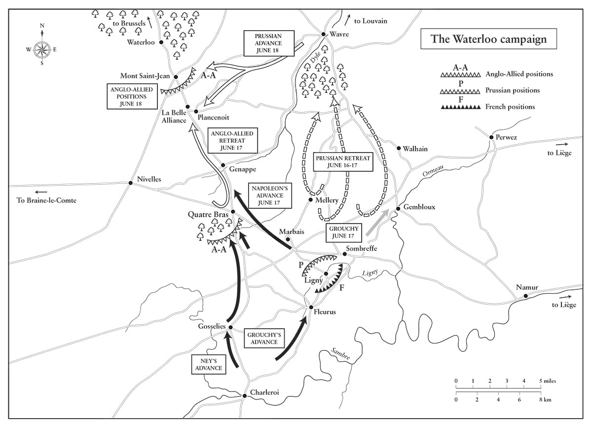
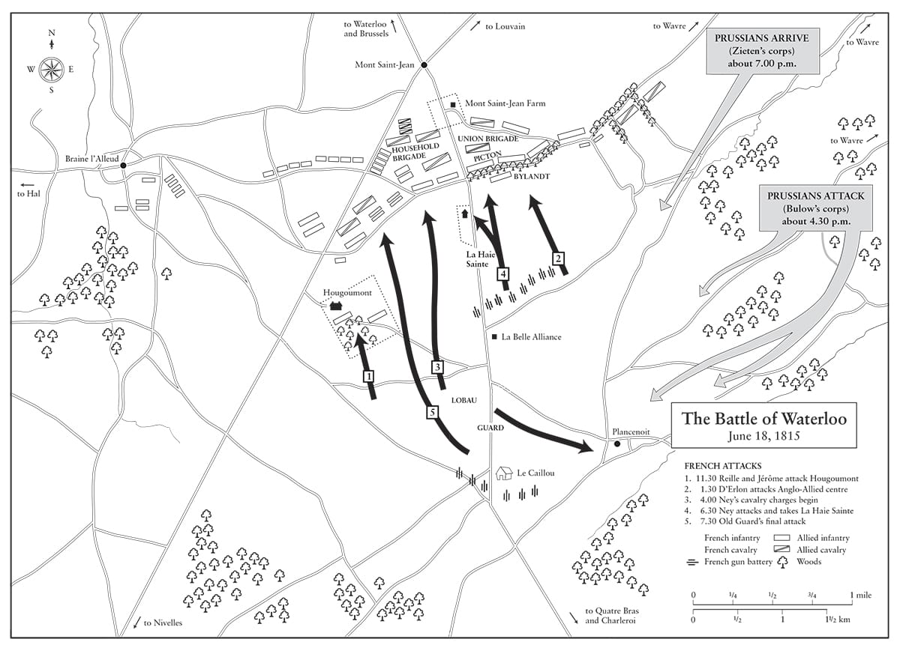

Ta cảm thấy Vận may đang từ bỏ ta. Ta không còn có trong mình cảm giác về thành công tối hậu, và nếu một người không sẵn sàng chấp nhận mạo hiểm khi thời điểm chín muồi, người đó sẽ kết thúc bằng việc chẳng làm gì hết.
• Napoleon nói về chiến dịch Waterloo
Một tổng tư lệnh cần tự hỏi bản thân vài lần trong ngày, sẽ thế nào nếu kẻ thù xuất hiện lúc này trước mặt mình, hay bên phải, hay bên trái mình?
• Tôn chỉ quân sự số 8 của Napoleon
⚝ ✽ ⚝
Khi Napoleon lên giường đi ngủ lúc 3 giờ sáng Thứ ba 21 tháng Ba năm 1815, ông đã khôi phục được phần lớn chính quyền của mình. Tuyên bố Vienna đã cho thấy rõ rằng Đồng minh sẽ không cho phép ông giữ ngôi báu, vì vậy ông cần chuẩn bị cho Pháp chống lại cuộc xâm lược, nhưng ông hy vọng rằng – không giống như năm 1814 – những người dân Pháp bình thường sẽ tích cực tập hợp lại bên ông, khi giờ đây họ đã trải nghiệm về sự lựa chọn nhà Bourbon. Ở mức độ nhất định, họ đã làm thế; trong vài tuần tiếp theo, đã có nhiều người nhập ngũ, ngang với khả năng mà các trung tâm huấn luyện có thể tiếp nhận. Đó là một khoảnh khắc trăn trở với người Pháp khi phải quyết định xem sự trung thành thực sự của họ thuộc về đâu. Về phía gia đình Bonaparte, Joseph được ông đón nhận một cách thân tình vào ngày 23 – Napoleon không còn nghi ngờ ông này có toan tính với Marie Louise – Lucien trở về từ cảnh lưu đày tự nguyện tại Rome và được “nhanh chóng chấp nhận” tới diện kiến ông và được tha thứ tất cả, Jérôme được giao chỉ huy Sư đoàn 6, Hồng y Fesch quay về Pháp và Hortense trở thành người quản lý Tuileries. Louis và Eugène chọn không can dự, bởi Eugène theo lệnh bố vợ, Vua Bavaria. Marie Louise ở lại Áo, nhiệt thành hy vọng rằng Napoleon, người mà cô gửi thư lần cuối cùng ngày 1 tháng Một, sẽ bị đánh bại. Trong lá thư gửi cho một người bạn ngày 6 tháng Tư, người phụ nữ trẻ si tình nhắc tới số ngày chính xác – 18 ngày – kể từ lần cuối cùng cô gặp Tướng Neipperg, và trong lời nhắn miệng cuối cùng của cô cho Napoleon không lâu sau đó, cô yêu cầu chia tay.
Sự ngạc nhiên không hề giả tạo của những chính khách cao cấp như Cambacérès trước tin Napoleon trở về đã cho thấy đây không phải là kết quả của một âm mưu rộng lớn như nhà Bourbon nghi ngờ, mà là của sức mạnh ý chí cùng khả năng nắm bắt cơ hội của một con người. Cambacérès miễn cưỡng tới Bộ Tư pháp, ca cẩm: “Tất cả những gì tôi muốn là nghỉ ngơi”. Một số ít người – như nhân vật cộng hòa kiên định Carnot, người được điều tới Bộ Nội vụ – cộng tác với Napoleon vì họ chân thành tin vào những lời cam đoan của ông rằng từ nay ông sẽ hành xử như một vị quân chủ lập hiến tôn trọng các quyền dân sự của người Pháp.(*) Những bộ trưởng khác, chẳng hạn như Lavalette, là những người mà sự ủng hộ dành cho Bonaparte đã ngấm vào máu. Decrès quay trở lại Bộ Hải quân, Mollien tới ngân khố, Caulaincourt tiếp quản Bộ Ngoại giao, và Daru về Bộ Quản lý chiến tranh. Maret trở thành Thứ trưởng Ngoại giao, trong khi Boulay de la Meurthe và Regnaud de Saint-Jean d’Angély quay về các vị trí chủ chốt của họ ở Hội đồng, còn Molé về cơ quan thanh tra cầu đường cũ của mình. Savary được giao quản lý cảnh binh, và thậm chí cả Fouché cũng được cho phép trở lại Bộ Cảnh sát – một dấu hiệu cho thấy ông ta là nhân vật không thể thiếu tới mức nào, bất chấp sự thất tín kinh niên của ông ta. Nhìn chung, Napoleon đã dễ dàng tập hợp được đủ tài năng và kinh nghiệm để vận hành một chính quyền hiệu quả nếu tình hình quân sự có thể được điều chỉnh theo cách nào đó. Khi ông gặp Rapp, người đã được nhà Bourbon giao chỉ huy một sư đoàn, ông đã đùa cợt (và có thể hơi đau một chút) đấm vào mỏ ác ông ta và nói, “Nào, đồ khốn, muốn giết ta hả?” trước khi bổ nhiệm ông ta làm Tư lệnh Đạo quân sông Rhine. “Ông ấy đã cố gắng tỏ ra nghiêm khắc vô ích”, Rapp viết trong cuốn tự truyện được xuất bản sau khi ông qua đời, nhưng “những cảm xúc nhân hậu luôn giành phần thắng”. Một trong số ít người viết thư xin có lại công việc nhưng bị từ chối là Roustam. “Anh ta là một kẻ hèn nhát”, Napoleon nói với Marchand. “Hãy ném lá thư đó vào lửa và đừng bao giờ hỏi lại ta về nó nữa”. Cũng dễ hiểu khi ông không muốn một người đã bỏ trốn khỏi Fontainebleau trong đêm vào năm trước làm vệ sĩ cho mình. Chỗ của anh ta bị thay thế bằng Louis-Étienne Saint-Denis, người kể từ năm 1811 đã được Napoleon cho ăn mặc như một lính Mamluk và gọi là Ali, dù anh ta là một người Pháp sinh ra tại Versailles.
Ngày 21 tháng Ba, tờ Moniteur một lần nữa lại thay đổi chính sách biên tập của mình ngay khi ông trở lại nắm quyền, in cái tên NAPOLEON bằng chữ hoa không ít hơn 26 lần trong bốn trang, thuật lại tin về cuộc trở về khải hoàn của ông. Napoleon thức dậy lúc 6 giờ sáng hôm đó sau khi chỉ ngủ ba tiếng, và đến 1 giờ chiều chủ trì một cuộc diễu binh lớn ở sân Tuileries. Trung tá Alexandre Coudreux mô tả sự xuất diện của Napoleon với con trai mình:
⚝ ✽ ⚝
Tinh thần làm việc của Napoleon vẫn không thay đổi: trong ba tháng từ lúc ông trở về Tuileries đến trận Waterloo, ông đã viết trên 900 lá thư, phần lớn liên quan tới việc cố gắng đưa Pháp trở lại trạng thái sẵn sàng cho chiến tranh kịp thời để đối phó với những động thái thù địch sắp tới. Ngày 23, ông lệnh cho Bertrand mang một số thứ từ Elba về Paris, trong đó đặc biệt có một con ngựa giống Corse, cỗ xe màu vàng và số đồ lót còn lại của ông. Hai ngày sau, ông đã viết thư cho Chánh thị thần của mình, Bá tước Anatole de Montesquiou-Fazensac, về ngân sách cho sân khấu năm đó.
•••
Thống chế duy nhất ngoài Lefebvre có mặt lập tức ở Tuileries để nhận nhiệm vụ là Davout, dù ông ta từng bị sử dụng dưới năng lực một cách đáng xấu hổ trong các chiến dịch năm 1813 và 1814, bị trói chân tại Hamburg thay vì được ra chiến trường chống lại các kẻ thù của Pháp. Sau khi Napoleon thoái vị, ông ta là một trong số ít thống chế đã từ chối tuyên thệ trung thành với Louis XVIII. Song giờ đây Napoleon phạm một sai lầm nghiêm trọng khi ông bổ nhiệm Davout làm Bộ trưởng Chiến tranh, Thống đốc Paris và chỉ huy Vệ binh Quốc gia của thủ đô, qua đó đã chối bỏ sự phục vụ của thống chế xuất sắc nhất dưới quyền mình trên các chiến trường tại Bỉ. Một số người đã phỏng đoán rằng việc thiếu quan hệ thân mật về cá nhân giữa hai người có thể ẩn sau quyết định của Napoleon, hoặc rằng Napoleon nghĩ ông cần tới Davout ở Paris trong trường hợp có một cuộc vây hãm – nhưng nếu chiến dịch ngoài chiến trường không giành được thắng lợi quyết định một cách nhanh chóng, việc ai chỉ huy ở Paris sẽ chẳng còn quan trọng nữa. Trên thực tế, Napoleon hoàn toàn hiểu điều đó, vì từng nói với Davout ngày 12 tháng Năm rằng, “Điều không may lớn nhất chúng ta phải lo ngại là việc ở vào thế quá yếu trên phía bắc và đã sớm trải qua một thất bại”. Tuy nhiên, vào ngày diễn ra trận Waterloo, Davout đang ngồi ký các văn bản hành chính về mức lương thời bình của quân đội. Nhiều năm sau, Napoleon hối tiếc vì đã không để Tướng Clauzel hoặc Tướng Lamarque làm Bộ trưởng Chiến tranh thay thế. Vào thời gian đó, ông nhấn chìm Davout trong những lá thư tới tấp quen thuộc của mình, chẳng hạn như trong lá thư ngày 29 tháng Năm, sau một cuộc kiểm tra sát sao năm pháo đội chuẩn bị lên đường đi Compiègne, ông viết, “Ta nhận thấy một số xe chở đạn không có những lọ mỡ nhỏ hay toàn bộ các phụ kiện thay thế như mệnh lệnh yêu cầu.”
Trong số 19 thống chế trong danh sách phục vụ (Grouchy được phong thống chế ngày 15 tháng Tư), chỉ 10 người – gồm Davout, Soult, Brune, Mortier, Ney, Grouchy, Saint-Cyr, Masséna, Lefebvre, và Suchet – tuyên bố ủng hộ Napoleon (hay 11 người nếu tính cả tới quyết định viển vông và tự sát, như thực tế cho thấy, của Murat khi ủng hộ người mà ông ta từng là người đầu tiên bỏ rơi). Nhưng phải tới tận ngày 10 tháng Tư, Masséna ở Marseilles mới đưa ra một tuyên bố ủng hộ “vị quân chủ được lựa chọn của chúng ta, Napoleon vĩ đại” và sau đó ông ta không làm gì thêm. Tương tự, Saint-Cyr ở lại lãnh địa của mình, còn Lefebvre, Moncey, và Mortier quá ốm yếu để có thể phụng sự. (Mortier đáng lẽ đã chỉ huy Cận vệ Đế chế nếu không bị đau thần kinh hông nặng.) Napoleon phỏng đoán là Berthier sẽ tham gia với mình, và nói đùa rằng sự báo thù duy nhất ông sẽ thực hiện sẽ là buộc ông ta phải tới Tuileries trong quân phục Cận vệ của Louis XVIII. Nhưng Berthier đã rời Pháp tới Bamberg ở Bavaria, tại đây ông ta ngã từ trên cửa sổ xuống chết ngày 15 tháng Sáu. Liệu đây là một vụ tự sát, giết người hay tai nạn – đã có tiền sử động kinh trong gia đình ông ta – vẫn chưa rõ, song nhiều khả năng nhất là tự sát. Ta chỉ có thể đoán về những xung đột nội tâm và sự tuyệt vọng đã dẫn tới một lựa chọn hành động như thế ở Tham mưu trưởng của Napoleon sau gần 20 năm phục vụ đặc biệt gần gũi. Sự vắng mặt của Berthier trong những tuần kế tiếp là một cú đòn nghiêm trọng.
Mặc dù 14 thống chế đã tham chiến trong chiến dịch Austerlitz, 15 trong chiến dịch Jena, 17 trong chiến dịch Ba Lan, 15 trong chiến dịch Iberia, 12 trong chiến dịch Wagram, 13 trong chiến dịch Nga, 14 trong chiến dịch Leipzig và 11 trong chiến dịch năm 1814, nhưng chỉ ba người – Grouchy, Ney, và Soult – có mặt trong chiến dịch Waterloo. Từ những lựa chọn hạn chế sẵn có cho mình, Napoleon cần một chỉ huy đã được thử thách trên chiến trường cho cánh trái của Đạo quân Bắc để đối phó với Wellington, nên ông triệu tập Ney, người mãi đến ngày 11 tháng Sáu mới gia nhập quân đội. Nhưng Ney, vốn đã mệt mỏi với chiến tranh, thể hiện một cách kém cỏi trong cả chiến dịch. Trên đảo St Helena, Napoleon phát biểu rằng Ney “có thể chỉ huy tốt 10.000 người, nhưng hơn thế thì vượt quá năng lực của ông ta”. Vị trí chỉ huy cánh trái của Ney đáng lẽ cần được đảm nhiệm bởi Soult, người được Napoleon chỉ định làm Tham mưu trưởng, một công việc mà ông ta cũng thực hiện rất kém cỏi. Thay vì chỉ định Suchet hay cấp phó của Soult là Tướng François de Monthion làm Tham mưu trưởng, ông đã lãng phí Suchet bằng cách điều ông này tới Đạo quân Alps, và giữ Monthion dù ông không ưa trong một vai trò thứ yếu.
Về các thống chế khác, Marmont và Augereau đã phản bội Napoleon năm 1814; Victor tiếp tục trung thành với nhà Bourbon; Jourdan, người cho tới lúc đó vẫn không đáng tin cậy về chính trị, được phong làm Thượng nghị sĩ Pháp, Thống đốc Besançon và Tư lệnh Quân khu 6, trong khi Macdonald và Oudinot giữ thái độ trung lập thụ động. Oudinot, người quay về nhà ở Bar-le-Duc sau khi binh lính của ông ta tuyên bố ủng hộ Napoleon, được cho là đã trả lời đề xuất bổ nhiệm của Napoleon: “Tôi sẽ không phụng sự ai nữa, thưa bệ hạ, và tôi sẽ không phụng sự ngài.”
•••
Trong một loạt bản tuyên bố từ Lyon và sau đó từ Tuileries, Napoleon nhanh chóng bãi bỏ nhiều trong số những cải cách mất lòng dân nhất của nhà Bourbon. Ông bãi bỏ những thay đổi về các tòa án, huân chương và tặng thưởng, khôi phục cờ tam tài và Cận vệ Đế chế, tịch thu tài sản do nhà Bourbon sở hữu, hủy bỏ những thay đổi về Binh đoàn Danh dự và khôi phục số hiệu cũ của các trung đoàn bị nhà Bourbon, vốn không mấy bận tâm tới tâm lý quân nhân, thay thế bằng những cái tên hoàng tộc. Ông cũng giải thể cơ quan lập pháp và triệu tập các hội đồng bầu cử của Đế chế tới họp tại Paris vào tháng Sáu ở Champs de Mars, để tôn vinh bản hiến pháp mới ông đang soạn thảo và “dự lễ đăng quang” của Hoàng hậu và Vua La Mã. “Về tất cả những gì các cá nhân đã làm, đã viết, hay đã nói kể từ khi Paris bị chiếm”, ông hứa, “ta sẽ mãi mãi coi như không biết gì”. Ông đã hành động đúng như lời nói của mình; vì đây là nền tảng nhạy cảm duy nhất để cố gắng tái lập sự thống nhất quốc gia. Nhưng điều này không ngăn được một cuộc bạo động khác ở Vendée, để chống lại nó Napoleon buộc phải triển khai 25.000 quân thuộc Đạo quân sông Loire do Lamarque chỉ huy, bao gồm những đơn vị Cận vệ Trẻ mới thành lập mà sẽ có giá trị tại Waterloo. Binh lính còn được điều động tới Marseilles – nơi tới tận giữa tháng Tư mới treo cờ tam tài – Nantes, Angers, và Saumur cùng một số nơi, điều vốn không cần trong các chiến dịch trước đó, trừ năm 1814.
Khi trở lại nắm quyền, Napoleon đã thực hiện tốt lời hứa khi bãi bỏ các loại thuế gián thu bị dân tình căm ghét, nhưng điều này lại làm giảm khả năng chi trả của ông cho chiến dịch sắp tới. Gaudin, người quay về nắm Bộ Tài chính, được cho biết vào ngày 3 tháng Tư rằng việc cung cấp hậu cần cho quân đội chuẩn bị chiến dịch sắp tới sẽ cần thêm 100 triệu franc. “Ta nghĩ mọi khoản ngân sách khác có thể cắt giảm được”, Napoleon nói với ông ta, “nếu xét đến thực tế là các bộ trưởng cho phép bản thân họ có nhiều hơn những gì họ thực sự cần”. (Bất chấp những biện pháp khắc khổ, ông vẫn tìm cách thu xếp được 200.000 franc trong ngân sách của nội vụ hoàng gia cho “các nhạc sĩ, ca sĩ, v.v”.) Gaudin rút rất nhiều từ Ngân sách Chi tiêu công, lấy ra 3 triệu franc bằng vàng và bạc từ kho bạc Paris, thu 675.000 franc từ thuế gỗ, vay 1,26 triệu franc từ Ngân hàng Pháp, bán lượng cổ phần trị giá 380.000 franc của Kênh đào Midi, những khoản này cùng việc bán trái phiếu năm 1816 và các tài sản khác của Chính phủ, cũng như một loại thuế đánh vào các mỏ muối và các ngành kỹ nghệ khác, thu về tổng cộng 17.434.352 franc. Sẽ cần tới một chiến dịch chóng vánh và chiến thắng tức thì, vì rõ ràng Pháp không thể gánh vác được một chuỗi các cuộc giao chiến kéo dài.
Để chứng minh cho tuyên bố của mình mong muốn điều hành Pháp một cách tự do, Napoleon đề nghị nhân vật ôn hòa Benjamin Constant trở về từ cảnh lưu đày trong nước ở Vendée và soạn thảo một hiến pháp mới, được gọi là Đạo luật Bổ sung cho Hiến pháp Đế chế. Đạo luật này dự kiến hệ thống lập pháp lưỡng viện sẽ chia sẻ quyền lực với Hoàng đế theo mô hình Anh, một hệ thống bầu cử hai cấp, xử án bằng bồi thẩm đoàn, tự do bày tỏ quan điểm và kể cả quyền buộc tội các bộ trưởng. Trong nhật ký của mình vào thời kỳ đó, Constant mô tả Napoleon, trước đó từng bị ông ta nhạo báng trong những tập sách được xuất bản là giống với Genghis Khan(*) và Attila(*), như “một người biết lắng nghe”. Sau này Napoleon giải thích rằng ông muốn “hiện thực hóa tất cả những đổi mới gần nhất” trong bản hiến pháp mới, nhằm làm cho việc phục hồi nhà Bourbon trở nên khó khăn hơn với bất cứ ai. Napoleon cũng chấm dứt mọi sự kiểm duyệt (đến mức ngay cả những tuyên ngôn của tướng lĩnh địch cũng có thể đọc được trên báo Pháp), hủy bỏ hoàn toàn buôn bán nô lệ, mời Phu nhân de Staël và người anh hùng của Chiến tranh Cách mạng Mỹ, Hầu tước de Lafayette, vào liên minh mới của ông (cả hai đều nghi ngờ Napoleon và từ chối(*)), và ra lệnh rằng không được giam giữ hay quấy rối người Anh. Ông cũng nói với Hội đồng rằng ông đã hoàn toàn từ bỏ tất cả các ý tưởng đế chế, và “từ nay trở đi hạnh phúc và sự củng cố” của Pháp “sẽ là mục tiêu trong mọi suy nghĩ của ta”. Ngày 4 tháng Tư, ông viết cho các quân chủ của châu Âu, “Sau khi đã thể hiện màn trình diễn về những chiến dịch lớn với thế giới, từ giờ trở đi thế giới sẽ dễ chịu hơn khi biết rằng sẽ không có sự đua tranh nào ngoài đua tranh vì lợi ích hòa bình, không có cuộc chiến nào ngoài cuộc chiến thiêng liêng vì hạnh phúc của các dân tộc.”
Các sử gia thường có xu hướng chế giễu những biện pháp và tuyên bố này, song với tình trạng kiệt quệ tột cùng của Pháp năm 1815, với phần lớn dân số mong muốn hòa bình, thì nếu giữ được quyền lực, có thể Napoleon đã quay về với kiểu chính quyền hòa bình của sự thống nhất quốc gia mà ông đã điều hành thời Tổng tài. Nhưng những kẻ thù lâu năm của ông không thể tin ông sẽ từ bỏ các tham vọng đế chế của mình, và chắc chắn không thể mạo hiểm với nguy cơ ông sẽ lại làm như vậy. Và họ cũng không thể đoán được ông sẽ qua đời sáu năm sau đó. Thay vì thế, như một dân biểu Anh đã nói không phải không có lý, rằng người ta cho là hòa bình “sẽ luôn không chắc chắn với một người như thế, và… chừng nào ông ấy còn trị vì chừng đó còn đòi hỏi việc vũ trang thường xuyên, và việc chuẩn bị cho xung đột còn khó chấp nhận hơn cả chính chiến tranh”. Ngày 25 tháng Ba, Đồng minh, vẫn đang họp Hội nghị Vienna, đã thành lập một Liên minh Thứ bảy chống lại ông.
Napoleon tận dụng thời gian trở lại nắm quyền ngắn ngủi của mình để tái khởi động nhiều công trình công cộng ở Paris, bao gồm đài phun nước hình con voi ở Bastille, một quảng trường chợ mới tại Saint-Germain, Bộ Ngoại giao tại Kè d’Orsay và tại Louvre. Talma quay lại dạy diễn xuất tại Nhạc viện, vốn đã bị nhà Bourbon đóng cửa; Giám đốc Louvre Denon, họa sĩ David, kiến trúc sư Fontaine và bác sĩ Corvisart quay trở lại các công việc cũ của họ trong nghệ thuật và y khoa; bức tranh vẽ trận Marengo của Carle Vernet lại được treo ở Louvre, và một số lá quân kỳ đoạt được trong các chiến dịch của Napoleon lại trưng bày tại Thượng viện và Cơ quan Lập pháp. Ngày 31 tháng Ba, Napoleon tới thăm các con gái mồ côi của những thành viên Binh đoàn Danh dự tại ngôi trường ở Saint-Denis từng bị nhà Bourbon cắt kinh phí. Cùng ngày, ông khôi phục Đại học Pháp trở lại vị thế trước đây của nó, tái bổ nhiệm Bá tước de Lacépède làm Chủ tịch. Tổng Hàn lâm viện Pháp quốc cũng tái kết nạp Napoleon làm hội viên. Trong buổi hòa nhạc tại Tuileries vào tháng Ba để chào mừng sự trở về của ông, Anne Hippolyte Boutet Salvetat, một nữ nghệ sĩ nổi tiếng 36 tuổi với nghệ danh Cô Mars, và mối tình xưa của Napoleon từ thời chiến dịch Italy, Cô George, đã cùng mang biểu tượng mới của những người ủng hộ Bonaparte lấy cảm hứng từ sự trở về vào mùa xuân của ông – một nhành violet.
Song không hoạt động về quan hệ công chúng nào kể trên có thể xua đi niềm tin đang lớn lên trong phần lớn người Pháp, rằng tai họa đang rình rập. Vào tháng Tư, việc gọi quân dịch được mở rộng tới cả những đàn ông có gia đình, vốn vẫn được miễn trừ cho tới lúc đó. Cùng tháng đó, John Cam Hobhouse, một nhà văn cấp tiến 28 tuổi và là bộ trưởng tương lai trong nội các Anh, khi đó đang sống ở Paris, ghi nhận: “Napoleon không được lòng người, ngoại trừ với quân đội hiện thời và với dân cư một số tỉnh; có lẽ ngay cả với họ, sự mến mộ dành cho ông cũng chỉ tương đối”. Hobhouse là một người ủng hộ Bonaparte cuồng tín, song ngay cả ông này cũng phải thừa nhận rằng giới quý tộc ở Saint-Germain căm ghét Napoleon, rằng các chủ cửa hàng muốn hòa bình, và cho dù các trung đoàn có hô vang “Hoàng đế muôn năm!” đầy xúc động, thì cũng chẳng có tiếng vọng nào từ dân chúng, vốn “không gây ồn ào hay hoan hô nào; chỉ nghe được một vài lời lẩm bẩm khe khẽ và thì thầm” khi Hoàng đế cưỡi ngựa đi qua thành phố. Đến giữa tháng Tư, dễ thấy là Marie Louise và Vua La Mã – “bông hồng và nụ hồng” như các nhà tuyên truyền gọi họ – đã không tới từ Vienna, càng khiến người Paris cảnh giác trước sự không tránh khỏi của chiến tranh.
Tại Tuileries, vào ngày 16 tháng Tư, Hobhouse quan sát Napoleon duyệt 24 tiểu đoàn Vệ binh Quốc gia – giờ đây chấp nhận tất cả nam giới lành lặn tuổi từ 20 đến 60. Vì binh lính mất hai tiếng để diễu qua, và Hobhouse chỉ đứng cách 9 m, nên ông ta có đủ cơ hội để quan sát người hùng của mình, mà ông ta nghĩ không hề giống các bức chân dung của ông:
⚝ ✽ ⚝
Cho dù một số binh sĩ bước ra khỏi hàng để đưa các tờ thỉnh nguyện của họ cho người lính thủ pháo đứng gác – một dấu tích còn lại từ truyền thống quân đội cách mạng – trong khi những người khác dường như sợ làm vậy, nhưng Napoleon vẫn ra lệnh thu thập các bản thỉnh nguyện của họ. Một tờ thỉnh nguyện được trình lên từ một cậu bé 6 tuổi mặc quân phục công binh và đeo râu giả; cậu bé treo nó nơi đầu cán một chiếc rìu để đưa nó cho Hoàng đế, và Napoleon “cầm lấy và đọc [nó] rất mãn nguyện.”
•••
Ngày 22 tháng Tư năm 1815, Constant công bố Đạo luật Bổ sung, sau đó được đưa ra trưng cầu dân ý: 1.552.942 phiếu tán thành và 5.740 phiếu phản đối, những con số cần được xem xét với cùng sự cẩn trọng như trong các cuộc trưng cầu dân ý trước đó. (Chẳng hạn, những người chọn cả tán thành và phản đối do nhầm lẫn được tính là tán thành – tỉ lệ tham dự bỏ phiếu tổng cộng chỉ là 22%. Ở Seine-Inférieure, chỉ có 11.011 phiếu tán thành và 34 phiếu phản đối được bỏ, so với 62.218 phiếu trong cuộc trưng cầu năm 1804.) “Trong cuộc đời ông ấy mà tôi từng thấy, chưa bao giờ ông ấy ưa thích sự yên tĩnh không bị quấy rầy hơn lúc này”, Lavalette, người phải báo cáo hằng ngày với Napoleon, ghi lại. Ông coi đây là sự tán thành Đạo luật Bổ sung, vốn cố gắng xóa đi sự khác biệt chính trị giữa những người theo khuynh hướng tự do, những người cộng hòa ôn hòa, những người Jacobin và những người ủng hộ Bonaparte trong cái gọi là “Chủ nghĩa Bonaparte cách mạng.”
Đến cuối tháng Tư năm 1815, một phong trào dân binh fédérés nói chung mang tính tự phát đã phát triển với hàng trăm ngàn người Pháp tham gia, với mục đích tái lập ý thức về sự thống nhất quốc gia mà Pháp được cho là từng cảm nhận vào thời điểm Bastille thất thủ. Những người fédérés tổ chức các cuộc tập hợp hai lần một tuần và yêu cầu xác lập một sự cam kết và thề đối mặt với nhà Bourbon bằng vũ lực; trên phần lớn đất nước, họ khiến các phần tử bảo hoàng phải im lặng (ít nhất cho tới Waterloo, sau đó họ bị đàn áp tàn bạo). Chỉ ở những vùng chống Bonaparte quyết liệt tại Pháp – Flanders, Artois, Vendée, và Midi – là Chủ nghĩa Bonaparte cách mạng không đi đến đâu. Còn ngoài ra, nó trải rộng trong các tầng lớp xã hội: ở Rennes với tầng lớp trung lưu chiếm ưu thế trong tổ chức fédérés địa phương, trong khi tại Dijon nó được hình thành từ tầng lớp lao động, còn ở Rouen thì gắn liền với Vệ binh Quốc gia. Các thành viên fédérés không có tác động gì trong chiến tranh, nhưng họ là dấu hiệu cho thấy sự ủng hộ rộng khắp mà Napoleon có được trong nước, và ông đã hoàn toàn có thể khuấy động một chiến dịch du kích sau Waterloo nếu ông lựa chọn làm vậy.
Ngày 15 tháng Năm, Đồng minh chính thức tuyên chiến với Pháp. Molé gặp Napoleon hai ngày sau đó tại điện Élysée, ông đã chuyển tới đây vì khu vườn biệt lập của nó, và thấy ông “buồn rầu và trầm uất, nhưng bình thản”. Họ nói về khả năng đất nước bị phân chia. Tuy nhiên, trước công chúng, Napoleon vẫn duy trì được sự bình tĩnh quen thuộc của mình. Tại một cuộc duyệt năm tiểu đoàn bộ binh và bốn tiểu đoàn Cận vệ Trẻ ở Tuileries diễn ra muộn hơn trong tháng đó, ông đã véo mũi những người lính thủ pháo và tát vui một viên đại tá, sau đó “viên sĩ quan rời đi, mỉm cười và trưng ra bên má của ông ta ửng đỏ vì cú tát.”
Đạo luật Bổ sung được phê chuẩn tại một buổi lễ khổng lồ ngoài trời được gọi là Champ de Mai, diễn ra tại địa điểm dễ gây nhầm lẫn là Champ de Mars, ở bên ngoài Học viện Quân sự, vào ngày 1 tháng Sáu. “Mặt trời phản chiếu ánh nắng trên 60.000 lưỡi lê”, Thiébault nhớ lại, “dường như làm cho cả không gian rộng lớn sáng lấp lánh”. Trong buổi lễ lạ lùng pha trộn giữa tôn giáo, chính trị và quân sự này, phần nào dựa trên một trong các truyền thống của Charlemagne, Napoleon mặc bộ trang phục màu đỏ tía không khác mấy chiếc áo choàng đăng quang của ông, đã diễn thuyết trước 15.000 người Pháp đang ngồi và trên 100.000 người chen chúc trong đám đông. “Trên cương vị Hoàng đế, Tổng tài, Người lính, ta nợ mọi thứ từ Nhân dân”, ông nói. “Trong thịnh vượng, trong nghịch cảnh, trên chiến trường, trong hội đồng, trên ngai vàng, giữa cảnh lưu đày, mọi suy nghĩ và hành động của ta luôn hướng về nước Pháp như là đối tượng duy nhất. Giống như Vua Athens, ta hy sinh bản thân cho nhân dân của ta với hy vọng chứng kiến lời hứa gìn giữ cho Pháp sự toàn vẹn, danh dự và các quyền tự nhiên của nó”.(*) Ông giải thích rằng ông đã được đưa trở lại nắm quyền do sự bất bình của công chúng trước cách đối xử với Pháp, và rằng ông đã trông đợi một nền hòa bình lâu dài vì Đồng minh đã ký các bản hiệp ước với Pháp – mà giờ đây họ đang vi phạm với việc tập trung lực lượng ở Hà Lan, chia cắt Alsace-Lorraine và chuẩn bị chiến tranh. Ông kết thúc với những lời sau, “Vinh quang, danh dự và hạnh phúc của bản thân ta không tách rời khỏi vinh quang, danh dự và hạnh phúc của Pháp”. Khỏi phải nói, sau bài diễn văn là tràng hoan hô kéo dài trước khi diễn ra một cuộc diễu binh lớn của quân đội, đại diện các khu và Vệ binh Quốc gia. Toàn thể triều đình, Hội đồng, các quan chức tư pháp và ngoại giao cao cấp, cùng đội ngũ sĩ quan mặc quân phục đều có mặt, bên các quý bà đeo kim cương. Với 100 phát đại bác bắn chào mừng, tiếng trống vang rền, một chương trình nghệ thuật ngoài trời quy mô, những con đại bàng được ghi tên của từng tỉnh, những cỗ xe ngựa thếp vàng, những lời tuyên thệ trang trọng, một bản Te Deum được hát, những kỵ binh dùng thương mặc áo choàng đỏ, một ban thờ do các tổng giám mục và thị thần nghi lễ mặc lễ phục chủ trì, đó là một cảnh tượng hoành tráng. Trong lễ cầu kinh, Napoleon quan sát đám đông qua một chiếc ống nhòm nhà hát. Hobhouse đã phải thừa nhận rằng khi Hoàng đế “phục phịch bước xuống khỏi ngai và quàng chiếc áo khoác quanh mình, trong ông ấy rất vụng về và phì nộn.”
Hai viện mới được bầu ra tuyên thệ trung thành với Hoàng đế mà không gặp trở ngại gì mấy vào hai ngày sau đó, cho dù các cuộc bầu cử vào tháng trước đã dẫn tới việc một số nhân vật theo chủ nghĩa lập hiến, tự do, bảo hoàng ngấm ngầm và Jacobin được bầu. Với Hạ viện ngay lập tức sa đà vào một cuộc tranh luận gay gắt về việc liệu các thành viên có nên được phép đọc các bản diễn thuyết từ các ghi chép giấu trong mũ của họ hay không, cơ quan lập pháp khó có khả năng gây ra tức thời cho Napoleon nhiều lý do để quan ngại, bất chấp thực tế là một nhân vật đối lập lâu năm với ông, cựu Thượng nghị sĩ-Bá tước Lanjuinais, được bầu làm Chủ tịch Hạ viện, và Lafayette giờ đây là một dân biểu. Có một buổi trình diễn pháo hoa lớn tại quảng trường Concorde tối hôm sau, có cả hình ảnh Napoleon trở về trên một con tàu từ Elba. Như một khán giả ghi lại: “Đám đông hô lớn ‘Hoàng đế và pháo hoa muôn năm!’ và sự cai trị của nền Quân chủ Lập hiến bắt đầu”. Tất nhiên, nó không phải là một nền quân chủ lập hiến như ở Anh, vì các bộ trưởng đều do Napoleon bổ nhiệm, bản thân ông cũng là Thủ tướng, song nó cũng không phải là chế độ độc tài phi xiềng xích của thời kỳ trước năm 1814, và dường như rất có thể nó sẽ tiến hóa theo hướng tự do.
Napoleon biết sự thành bại của mình rốt cuộc sẽ chỉ được định đoạt trên chiến trường. Vào ngày 7 tháng Sáu, ông lệnh cho Bertrand chuẩn bị sẵn sàng ống nhòm, quân phục, ngựa và xe cho mình “để ta có thể rời đi sau khi ra lệnh hai tiếng”, và nói thêm: “Vì ta sẽ thường xuyên cắm trại, nên điều quan trọng là ta cần giường sắt và lều cho mình”. Cùng ngày, ông nói với Drouot: “Ta thấy đau buồn phải chứng kiến cảnh những người lính thuộc hai tiểu đoàn lên đường sáng nay mỗi người chỉ có một đôi ủng”. Hai ngày sau, 9 tháng Sáu năm 1815, Đồng minh ký Hiệp ước Vienna. Theo Điều I, họ tái khẳng định dự định dùng vũ lực loại bỏ Napoleon khỏi ngai vàng, và theo Điều III, họ nhất trí sẽ không buông vũ khí cho tới khi đã đạt được việc đó.
•••
Ngay từ ngày 27 tháng Ba, Napoleon đã nói với Davout rằng “Đạo quân Bắc sẽ là đạo quân chủ lực”, vì các lực lượng Đồng minh gần nhất đang ở Flanders, và ông tất nhiên không định chờ Schwarzenberg quay lại Pháp. Vào lúc 4 giờ sáng Thứ hai, 12 tháng Sáu, Napoleon rời Élysée để tới hội quân với Đạo quân Bắc ở Avesnes, tại đây ông ăn tối cùng Ney vào hôm sau. Đến trưa 15, ông đã ở Charleroi trên đất Bỉ, sẵn sàng chiến đấu với đạo quân Phổ dưới quyền Blücher gần Fleurus. Ông hy vọng đánh bại Blücher trước khi tấn công lực lượng Anh-Hà Lan-Bỉ-Đức dưới quyền Wellington, 36% quân số của nó là người Anh, trong khi đó 49% sử dụng tiếng Đức là ngôn ngữ thứ nhất của họ.
Sau này Napoleon nói rằng “ông đã trông cậy chủ yếu… vào ý tưởng rằng một chiến thắng trước quân đội Anh tại Bỉ… sẽ là đủ để tạo ra một thay đổi về quyền lực tại Anh, và cho ông cơ hội về một sự ngừng bắn hoàn toàn ngay lập tức”. Chiếm Brussels, nguyên là một phần của Đế chế Pháp cho tới năm 1814, hẳn cũng sẽ tốt cho tinh thần. Chiến đấu là một sự mạo hiểm, nhưng không mạo hiểm bằng chờ đợi cho tới khi các đạo quân đông đảo của Áo và Nga sẵn sàng tấn công Paris một lần nữa. Tại châu Âu, 280.000 quân Pháp đối đầu với khoảng 800.000 quân Đồng minh, cho dù cánh quân Áo sẽ không thể có mặt tại chiến trường trong vài tuần, và người Nga sẽ không thể có mặt trong vài tháng. “Nếu chúng tiến vào Pháp”, Napoleon nói với quân đội từ Avesnes ngày 14 tháng Sáu, “chúng sẽ tìm thấy nấm mồ của mình tại đây… Với tất cả những người Pháp vốn có lòng dũng cảm, đã tới lúc chiến thắng hoặc chết!”
Giai đoạn mở màn chiến dịch đã chứng kiến ông làm sống lại những gì tốt nhất về năng lực chiến lược mà mình đã chứng tỏ vào năm trước. Quân Pháp ban đầu thậm chí còn ở tình trạng rải rác hơn phía Đồng minh, trên một diện tích rộng 280 km với chiều sâu 160 km, nhưng Napoleon đã sử dụng thực tế này để vờ tiến về phía tây rồi sau đó tập trung ở trung tâm theo phong cách đội hình vuông kinh điển. Cuộc vận động của Đạo quân Bắc 125.000 người từ ngày 6 tới 15 tháng Sáu đã cho phép họ vượt qua các con sông tại Marchienne, Charleroi và Châtelet mà không gặp phản ứng đáng kể nào của Đồng minh. Wellington, người đã khẩn cấp tới từ Vienna ngày 5 tháng Tư, đã buộc phải rải lực lượng của mình theo một mặt trận rộng hơn 99 km, cố gắng kiểm soát đồng thời các tuyến đường tới Brussels, Antwerp, và Ghent. Ông ta thất vọng thừa nhận khi nói vào tối 15 tháng Sáu, “Có Chúa chứng giám, Napoleon đã lừa được tôi.”
Tốc độ và năng lực chiến thuật của Napoleon một lần nữa lại cho phép ông tấn công vào nơi tiếp giáp giữa các đạo quân đối địch với mình, như ông vẫn làm trong gần 20 năm. Những cuộc điều quân của ông càng ấn tượng hơn, vì một nửa đạo quân của ông là lính quân dịch mới nhập ngũ. Cho dù các cựu binh đã được thả ra khỏi các trại tù binh từ Tây Ban Nha, Nga và Áo, nhưng sau cơn phấn khích ào ạt đầu tiên, chỉ có 15.000 người tình nguyện trở lại quân ngũ, vì vậy phải gọi quân dịch để bổ sung phần thiếu hụt. Tinh thần binh lính khá dao động, nhất là sau khi cựu thủ lĩnh Chouan, Tướng Bourmont, cùng ban tham mưu của ông ta đào ngũ sang phía Đồng minh vào sáng 15. Một số người đã có lý khi hỏi rằng tại sao những tướng lĩnh đã tuyên thệ trung thành với nhà Bourbon như Soult, Ney, Kellermann, và Bourmont đều được cho phép trở lại. Tinh thần thấp dẫn tới kỷ luật kém, Cận vệ Đế chế tha hồ cướp bóc tại Bỉ và cười vào mặt những cảnh binh được phái tới ngăn họ lại. Trang bị cũng thiếu thốn: Trung đoàn khinh binh 14 không có mũ đội, Trung đoàn giáp kỵ 11 không có tấm che ngực. (“Tấm che ngực không cần thiết cho chiến đấu”, Napoleon dửng dưng nói với Davout ngày 3 tháng Sáu.) Người Phổ thông tin rằng một số tiểu đoàn thuộc Cận vệ Đế chế, được tái lập ngày 13 tháng Ba khi Napoleon đang ở Lyon, trông giống như một thứ dân binh, đội những chiếc mũ quân đội thời bình và mũ hai sừng thay vì những chiếc mũ lông đáng gờm của họ. Cận vệ Trung, từng bị nhà Bourbon giải tán, mới chỉ được gọi tái ngũ vào tháng trước đó.

Ngày 16 tháng Sáu, Napoleon chia đạo quân của mình làm ba. Ney chỉ huy cánh trái với ba quân đoàn để ngăn cản hai đạo quân địch hợp nhất, bằng cách chiếm giữ ngã tư đường tại Quatre Bras – nơi tuyến đường chính Brussels-Charleroi chạy theo hướng bắc-nam cắt qua tuyến đường huyết mạch đông-tây Namur-Nivelles, cũng là tuyến liên kết chính giữa Blücher và Wellington – trong khi Grouchy ở cánh phải với quân đoàn của mình, còn Napoleon ở trung tâm cùng Cận vệ Đế chế và một quân đoàn nữa. Muộn hơn trong ngày hôm đó, trong khi Ney giao chiến đầu tiên với Hoàng thân xứ Orange và sau đó là đích thân Wellington tại Quatre Bras, thì Napoleon và Grouchy tấn công Blücher tại Ligny. “Ông cần tiến về phía gác chuông kia”, ông nói với Gérard, “và thu hút quân Phổ xa nhất có thể. Ta sẽ yểm trợ cho ông. Grouchy đã có lệnh của ta rồi”. Dù những mệnh lệnh xác định nhiệm vụ này nghe có thể hơi tùy tiện, nhưng một viên tướng dày dạn kinh nghiệm như Gérard hiểu điều gì được trông đợi ở mình. Cùng lúc, Napoleon ra lệnh cho quân đoàn 20.000 người dưới quyền Tướng d’Erlon, mà một mệnh lệnh từ Soult trước đó đã tách quân đoàn này khỏi lực lượng dưới quyền Ney trên đường hành quân tới Quatre Bras, tấn công vào cánh phải để hở của quân Phổ tại Ligny.
Nếu d’Erlon đến nơi như đã được sắp xếp, chiến thắng đáng kể của Napoleon tại Ligny đã có thể biến thành một trận đại thắng, nhưng thay vì thế, đúng lúc chuẩn bị giao chiến, ông ta nhận được lệnh khẩn đầy quyết liệt từ Ney rằng ông ta được cần đến tại Quatre Bras, vậy là ông ta quay lại và hành quân tới đó. Trước khi ông ta kịp tới nơi và có thể góp phần vào, thì Soult ra lệnh cho ông ta quay lại Ligny, nơi quân đoàn kiệt sức của ông ta đã tới nơi quá muộn nên không thể tham gia vào trận đánh đó. Sự lúng túng giữa Ney, Soult, và d’Erlon đã tước mất của Napoleon một chiến thắng quyết định tại Ligny, nơi Blücher phải chịu khoảng 17.000 thương vong so với 11.000 của Napoleon, và quân Phổ bị đẩy lui khỏi chiến trường khi trời tối. Trong khi đó, Ney mất trên 4.000 người và không chiếm được Quatre Bras.
Tôi có thể thua các trận đánh”, Napoleon đã nói với các phái viên Piedmont từ năm 1796, “nhưng sẽ không bao giờ có ai thấy tôi để mất thời gian vì quá tự tin hoặc chậm chạp”. Với quân Phổ dường như đang rút lui dọc theo các tuyến đường tiếp tế của họ chạy về phía đông tới Liège, ông đã có thể tấn công vào lực lượng của Wellington ngay khi trời sáng vào Thứ bảy, 17 tháng Sáu. Nhưng thay vì thế, ông chỉ thức dậy khi đã 8 giờ sáng, sau đó lãng phí năm tiếng kế tiếp vào việc đọc các báo cáo từ Paris, thăm chiến trường Ligny, ra chỉ thị cho việc chăm sóc thương binh, hỏi chuyện các sĩ quan Phổ bị bắt về chính sách ngoại giao của họ, và trò chuyện với các tướng lĩnh của mình “với sự thoải mái quen thuộc” về nhiều vấn đề chính trị. Chỉ tới trưa, ông mới phái Grouchy đi cùng một lực lượng lớn gồm 33.000 quân và 96 khẩu pháo để đuổi theo đạo quân Phổ, do đó đã chia nhỏ lực lượng của mình vào ngày trước khi ông dự kiến một trận đánh quan trọng với Wellington, thay vì tập trung nó lại. “Bây giờ, Grouchy, hãy đuổi theo đám quân Phổ đó”, Napoleon nói, “hãy cho chúng cảm giác bị lưỡi thép lạnh kề sát vào hông, nhưng phải đảm bảo giữ liên lạc với ta bên cánh trái của ông”. Nhưng với việc phái Grouchy đi, ông đang lờ đi một trong những tôn chỉ quân sự của chính mình: “Không nên chia tách lực lượng vào hôm trước trận đánh, vì tình hình có thể thay đổi trong đêm, hoặc bởi việc kẻ thù rút lui, hoặc bởi sự xuất hiện của lực lượng tăng viện lớn có thể cho phép kẻ thù tấn công, và khiến cho sự bố trí trước đó của ta thành thảm họa.
Cho dù thăm Ligny cho ông một khái niệm về lực lượng Phổ và việc đơn vị nào của địch đã bị tổn thất nặng nhất, nhưng thông tin này không bao giờ có thể bù đắp lại việc đã để quân Phổ chạy thoát – điều họ rất có thể đã không làm được nếu ông phái Grouchy đi vào ngày 16, hoặc sáng sớm ngày 17. Soult đã phái Pajol đi do thám về phía Namur, nơi ông ta chiếm được vài khẩu pháo và bắt được một số tù binh, dẫn Napoleon thêm ngả về phía giả thiết rằng phần lớn quân đội Phổ đang rút lui hoảng loạn theo các tuyến đường tiếp tế của họ. Những lời bình luận khác nhau ông đưa ra hôm ấy và sau đó cho thấy Napoleon đã nghĩ mình khiến quân Phổ tan tác ở Ligny tới mức họ không thể đóng vai trò quan trọng nào nữa trong chiến dịch. Vì thế, không toán trinh sát nào được phái lên phía bắc.
Người Phổ đã xuất phát trước 15 giờ so với Grouchy, người không hề biết họ đã đi theo hướng nào. Blücher đã bị chấn thương trong trận đánh, và Tham mưu trưởng của ông ta là Tướng August von Gneisenau đã ra lệnh rút lên phía bắc để gần với đạo quân của Wellington thay vì về phía đông. Cuộc di chuyển trái với trực giác này đã được Wellington mô tả như quyết định quan trọng nhất trong thế kỷ 19. Khi ông diễn đi diễn lại trận đánh trong đầu mình trong nửa thập kỷ sau đó, Napoleon trách cứ về rất nhiều yếu tố cho thất bại của mình, song ông thừa nhận rằng hoặc đáng lẽ ông nên giao nhiệm vụ truy kích quân Phổ cho Vandamme hoặc Suchet vốn dĩ tích cực hơn, hoặc ông nên để lại việc này cho Pajol với một sư đoàn duy nhất. “Ta đáng lẽ phải mang tất cả số binh lính còn lại theo mình”, ông rầu rĩ kết luận.
Chỉ sau đó trong ngày 17, Napoleon mới di chuyển một cách chậm rãi về phía Quatre Bras, tới đó lúc 1 giờ chiều để hội quân cùng Ney. Đến lúc này, Wellington đã biết được những gì xảy ra tại Ligny và thận trọng tự mình rút lui lên phía bắc trong trời mưa như trút, với dư dả thời gian để chiếm lĩnh vị trí trên sườn núi Saint-Jean. Nơi này nằm cách bản doanh của ông ta tại làng Waterloo vài cây số về phía nam, một khu vực mà trước đó ông ta đã thị sát và để ý thấy vô số lợi thế phòng thủ khi trở thành chiến trường – chỉ rộng 4,8 km với rất nhiều địa hình “ẩn” và hai trang trại lớn xây bằng đá mang tên Hougoumont và La Haie Sainte nằm nhô ra trước một ngọn đồi. “Một tôn chỉ đã được tán thành trong chiến tranh là không bao giờ làm điều kẻ thù muốn ta làm”, là một câu nói khác của Napoleon, “do chỉ mỗi lý do này, vì hắn mong muốn điều đó. Vì thế, cần tránh một chiến trường mà hắn trước đó đã nghiên cứu và thị sát”. Không tung Cận vệ vào trận ở Borodino, nán lại quá lâu ở Moscow và Leipzig, chia nhỏ lực lượng của mình trong các chiến dịch Leipzig và Waterloo, và cuối cùng là đi tới cuộc quyết chiến ở nơi đối thủ của ông đã chọn: tất cả đều là kết quả của việc Napoleon không tuân theo các tôn chỉ quân sự của chính mình.
•••
Napoleon dùng một phần của ngày 17 để tới thăm các tiểu đoàn đã chiến đấu xuất sắc tại Ligny, và nhắc nhở các đơn vị đã chiến đấu không tốt. Ông nhận ra Đại tá Odoards của Trung đoàn bộ binh 22 từng phục vụ trong Cận vệ của ông, và hỏi: ông ta có bao nhiêu người tham gia duyệt binh (1.830), đã mất bao nhiêu người ngày hôm trước (220), và những khẩu súng hỏa mai quân Phổ bỏ lại được xử trí như thế nào. Khi Odoards cho ông hay rằng chúng đã bị phá hủy, Napoleon nói chúng cần cho Vệ binh Quốc gia, và trả 3 franc cho mỗi khẩu được thu về. Ngoài ra, buổi sáng 17 được đặc trưng bởi trạng thái đình trệ hoàn toàn hiếm có.
Vài thập kỷ sau chiến dịch, Jérôme và Larrey đã đưa ra những tuyên bố rằng tình trạng án binh bất động của Napoleon là kết quả của việc ông bị bệnh trĩ hành hạ khiến ông bị bất lực sau trận Ligny. “Em trai của ta, ta nghe nói cậu bị bệnh trĩ hành hạ”, Napoleon đã viết cho Jérôme vào tháng Năm năm 1807. “Cách đơn giản nhất để rũ bỏ nó là để vào đó ba hay bốn con đỉa. Kể từ khi ta dùng cách điều trị này cách đây 10 năm, ta đã không bao giờ bị hành hạ nữa”. Nhưng liệu có thực là ông đã bị hành hạ? Đây có thể là lý do vì sao ông hầu như không ngồi trên lưng ngựa trong trận Waterloo – tới thăm Đại Pháo đội một lần lúc 3 giờ chiều và cưỡi ngựa dọc theo chiến tuyến lúc 6 giờ chiều – và lý do vì sao ông đã hai lần lui về một trang trại ở Rossomme, nằm phía sau chiến tuyến chừng 1.400 m trong những khoảng thời gian ngắn. Ông đã mắng người hầu của mình, Gudin, vì đã đẩy ông ngồi lên yên quá thô bạo ở Le Caillou vào buổi sáng, sau đó xin lỗi và nói: “Khi anh giúp một người lên ngựa, tốt nhất hãy làm việc đó một cách nhẹ nhàng”. Tướng Auguste Pétiet, một thành viên ban tham mưu của Soult tại Waterloo, nhớ lại rằng:
⚝ ✽ ⚝
Các sử gia cũng đưa ra chẩn đoán về sự nhiễm trùng bàng quang, cho dù người hầu phòng Marchand của Napoleon phủ nhận việc chủ nhân của mình bị chứng bệnh ấy vào thời gian này, giống như về chứng ngủ rũ cũng không có bằng chứng thuyết phục nào. “Chưa có thời điểm nào trong đời mà Hoàng đế lại thể hiện nhiều nhiệt huyết, nhiều quyết đoán, và nhiều năng lực trong vai trò một thủ lĩnh như lúc ấy”, một trong những sĩ quan phụ tá thân cận nhất của ông, Flahaut, nhớ lại. Nhưng vào năm 1815, Napoleon đã gần 46 tuổi, thừa cân, và không còn sức lực dồi dào như thời giữa tuổi 20 của ông. Cho tới ngày 18 tháng Sáu, ông cũng chỉ có một đêm ngủ tử tế trong suốt sáu ngày trước đó. Flahaut giải thích cho việc không hành động của Napoleon chỉ đơn giản là “Sau một trận đánh quyết liệt và những cuộc hành quân như chúng tôi đã thực hiện hôm trước, không thể trông đợi đạo quân của chúng tôi lại lên đường được lúc rạng sáng”. Song những mối bận tâm đó đã không ngăn cản nổi Napoleon thực hiện bốn trận đánh trong năm ngày vào năm trước đó.
Trên thực tế, không có bằng chứng thuyết phục nào cho thấy bất cứ quyết định nào mà Napoleon đưa ra ngày 18 tháng Sáu là kết quả tình trạng thể chất của ông, chứ không phải do những đánh giá sai lầm của bản thân ông cũng như những tin tình báo sai lệch ông nhận được. “Trong chiến tranh”, ông nói với một trong những người canh giữ mình vào năm sau, “cuộc chơi luôn thuộc về ai phạm phải ít sai lầm hơn”. Trong chiến dịch Waterloo đó là Wellington, người đã nghiên cứu về các chiến thuật và sự nghiệp của Napoleon, đã triển khai quân chính xác và đã có mặt khắp nơi trên chiến trường. Ngược lại, Napoleon, Soult và Ney đã đánh một trong những trận được chỉ huy tồi nhất trong các cuộc Chiến tranh Napoleon. Chỉ huy chiến trường giỏi nhất mà Napoleon từng đối đầu trước Waterloo là Đại Công tước Charles, và đơn giản là ông đã không được chuẩn bị sẵn sàng để đối mặt với một bậc thầy chiến thuật ở đẳng cấp của Wellington – người chưa bao giờ thua một trận nào.
•••
Khi Napoleon gặp d’Erlon tại Quatre Bras vào ngày 17, ông đã nói, hoặc “Ông đã giáng một đòn vào sự nghiệp của Pháp, thưa tướng quân”, hoặc, như chính d’Erlon thích nhớ lại hơn, “Pháp đã bị mất; tướng quân thân mến của ta, hãy dẫn đầu kỵ binh và gây sức ép mạnh nhất như có thể lên hậu quân Anh”. Tối đó, Napoleon dường như đã tới gần cuộc giao chiến giữa kỵ binh Anh đi hậu quân, làm chậm lại cuộc truy đuổi dưới trời mưa to, và tiền quân Pháp đẩy họ về phía bắc tới hướng sườn núi Saint-Jean, cho dù ông đã không tham gia vào một cuộc xung phong của kỵ binh như d’Erlon khẳng định trong hồi ký của mình. Tuy nhiên, đúng là ông đã có thời gian để dừng lại với Đại úy Elphinstone bị thương thuộc Trung đoàn Khinh kỵ 7, cho anh ta uống rượu vang từ chính chiếc chai để trong túi bên hông mình, và yêu cầu bác sĩ chăm sóc cho anh ta. Napoleon hoàn toàn có khả năng thể hiện lòng nhân từ với những cá nhân người Anh trong khi căm ghét Chính phủ của họ.
Đến khoảng 7 giờ tối, Napoleon đình chỉ cuộc tấn công vào hậu quân của Anh-Đồng minh, như d’Erlon đã hối thúc ông làm, và nói: “Hãy cho binh lính nấu súp và chuẩn bị vũ khí của họ một cách kỹ lưỡng. Chúng ta sẽ xem trưa mai đem đến điều gì”. Tối đó, ông tới thăm các vị trí tiền tiêu, bảo binh lính của mình nghỉ ngơi cho tốt, vì “Nếu đạo quân Anh còn nán lại đây ngày mai, nó là của ta”. Ông chọn trang trại Le Caillou làm bản doanh của mình tối đó, ngủ trên chiếc giường dã chiến dưới tầng trệt trong khi Soult ngủ trên lớp rơm trải trên sàn ở tầng trên. (Ông đã không muốn đi thêm 4,8 km nữa trở lại thành phố Genappes, vì ông biết mình sẽ nhận được các báo cáo.) Corbineau, La Bédoyère, Flahaut, và các sĩ quan phụ tá khác của ông trải qua một đêm cưỡi ngựa cùng các quân đoàn dưới trời mưa, ghi nhận các di chuyển và vị trí.
Người vệ sĩ Pháp “Mamluk Ali” của Napoleon, nhớ lại ông đã nằm trên một ổ rơm cho tới khi phòng của mình được dọn xong. “Khi ông ấy đã nhận phòng… ông ấy ra lệnh tháo ủng ra cho mình, và chúng tôi gặp khó khăn khi làm việc này vì chúng đã bị ướt suốt cả ngày, và sau khi cởi quần áo, ông ấy lên giường. Tối đó, ông ấy ngủ rất ít, cứ mỗi phút lại bị quấy rầy bởi những người đi ra đi vào; người này tới báo cáo, người kia tới nhận lệnh, v.v”. Ít nhất ông cũng được khô ráo. “Áo khoác và quần của chúng tôi dính bết đến hàng cân bùn”, Trung sĩ Hippolyte de Mauduit thuộc Trung đoàn bộ binh thủ pháo 1 nhớ lại. “Rất nhiều binh lính đã mất giày và tới nơi trú quân với chân trần”. Chưa bao giờ nỗi ám ảnh về giày của Napoleon được minh chứng sự đúng đắn của nó hơn bây giờ.
Napoleon sau này có nói với Las Cases là ông đã đi trinh sát cùng Bertrand lúc 1 giờ sáng để kiểm tra chắc chắn rằng đạo quân của Wellington vẫn còn ở đó, điều rất có thể ông đã làm (dù không có gì chứng thực). Ông thức giấc lúc 2 giờ sáng để nhận một báo cáo từ Grouchy, được viết trước đó 4 tiếng, trong đó ông ta cho biết mình đã chạm trán với quân Phổ gần Wavre. Grouchy nghĩ đây có thể là chủ lực Phổ, trong khi trên thực tế chỉ là hậu quân của Blücher. Napoleon đã không trả lời trong 10 tiếng tiếp theo, dù khi đó ông đã biết Wellington sẽ phòng thủ tại núi Saint-Jean vào sáng hôm đó. Quả là một sai lầm khác thường khi không gọi Grouchy quay lại chiến trường ngay lập tức để đánh vào cánh trái của Wellington.
“Ôi! Chúa ơi!” Napoleon nói với Tướng Gourgaud vào năm sau, “có lẽ trận mưa vào ngày 17 tháng Sáu đã có liên quan nhiều hơn người ta vẫn nghĩ với thất bại ở Waterloo. Nếu không phải ta đã mệt đến thế, hẳn ta đã ở trên lưng ngựa suốt đêm. Những biến cố dường như rất nhỏ thường có hậu quả rất lớn”. Ông rất tin tưởng rằng việc trinh sát kỹ lưỡng chiến trường của ông như tại Eggmühl đã dẫn tới chiến thắng, song ý nghĩa thực sự của trận mưa là việc chỉ huy pháo binh của ông, Tướng Drouot, đề nghị đợi cho tới lúc mặt đất khô ráo trước khi bắt đầu trận chiến ngày hôm sau, để ông ta có thể đưa các khẩu pháo của mình vào vị trí dễ dàng hơn và các quả đạn pháo sẽ nảy lên văng xa hơn khi bắn. Đây là lời khuyên mà Drouot sẽ hối tiếc suốt phần đời còn lại của mình, vì cả ông ta lẫn Hoàng đế đều không biết rằng sau khi đã thoát khỏi Grouchy, Blücher đã lặp lại lời hứa của mình với Wellington cũng vào sáng hôm đó rằng ít nhất ba quân đoàn Phổ sẽ tới được chiến trường vào chiều cùng ngày. Trên thực tế, Wellington đã chỉ quyết định giao chiến tại đó với điều kiện việc này sẽ diễn ra.
Nếu như Napoleon bắt đầu cuộc tấn công của ông lúc bình minh, vào 3:48 sáng Chủ nhật 18 tháng Sáu, thay vì sau 11 giờ sáng, thì ông đã có thêm hơn 7 giờ nữa để phá vỡ chiến tuyến của Wellington trước khi quân đoàn của Bülow ập vào sườn phải của ông.(*) Cho dù Napoleon đã lệnh cho Ney thu xếp để binh lính ăn no và kiểm tra trang bị của họ “để tới đúng 9 giờ tất cả họ đều sẵn sàng và có thể giao chiến”, nhưng phải mất thêm hai tiếng nữa trước khi giao chiến bắt đầu. Sau đó, Napoleon chủ trì một cuộc họp trong lúc ăn sáng cùng các sĩ quan cao cấp trong phòng ăn kế bên phòng ngủ của ông tại Le Caillou. Khi một số tướng lĩnh đã chiến đấu với Wellington ở Tây Ban Nha như Soult, Reille, và Foy đề xuất rằng ông không nên kỳ vọng vào việc có thể dễ dàng công phá xuyên qua bộ binh Anh, Napoleon trả lời, “Bởi vì các ông đã bị Wellington đánh bại nên các ông coi ông ta là một viên tướng giỏi. Ta nói rằng ông ta là một viên tướng tồi và người Anh là những tên lính tồi. Tới bữa trưa là sẽ xong xuôi!” Soult, rõ ràng không bị thuyết phục, chỉ có thể nói, “Thần hy vọng là vậy!” Những nhận xét có vẻ ngạo mạn này hoàn toàn mâu thuẫn với cách nhìn nhận thực tế và chính xác của ông về Wellington và người Anh, nhưng cần được coi là xuất phát từ sự cần thiết phải cổ vũ tinh thần các thuộc cấp của ông chỉ vài tiếng trước một trận đánh lớn.
Tại cuộc họp trong bữa sáng, Jérôme thông báo với Napoleon rằng người hầu bàn tại nhà trọ Vua Tây Ban Nha ở Genappes nơi Wellington ăn tối ngày 16 tháng Sáu, đã nghe lỏm được một sĩ quan phụ tá nói rằng quân Phổ sẽ hội quân với họ ở phía trước rừng Soignes, nằm ngay sau núi Saint-Jean. Đáp lại thông tin này (mà rốt cuộc lại chính xác một cách thảm họa), Napoleon nói, “Người Phổ và người Anh không thể hội quân trong hai ngày nữa sau một trận đánh như trận Fleurus [tức Ligny], và trong thực tế chúng đang bị truy kích bởi một lực lượng đáng kể”. Sau đó ông nói thêm, “Trận đánh sắp tới sẽ cứu Pháp và sẽ được kỷ niệm trong các biên niên của thế giới. Ta sẽ cho pháo binh pháo kích và kỵ binh xung phong để buộc kẻ thù bộc lộ vị trí của chúng, và khi ta đã hoàn toàn chắc chắn về những vị trí quân Anh chiếm lĩnh, ta sẽ tiến thẳng tới chúng cùng Cận vệ Già của ta”. Napoleon có thể được tha thứ vì đã không thay đổi toàn bộ chiến lược của ông trên cơ sở thông báo của một người hầu về cuộc nói chuyện của tay sĩ quan phụ tá quá ba hoa, nhưng ngay cả lời diễn giải của chính ông về những chiến thuật ông sắp sử dụng cũng bộc lộ rằng chúng hoàn toàn thiếu sự sáng tạo. Wellington trông đợi Napoleon sử dụng cách điều binh vòng rộng đánh tạt sườn với cánh trái quân Pháp – và bố trí 17.500 quân tại Hal để phòng ngừa chuyện này – song kế hoạch của ông hóa ra chẳng hề sáng tạo hơn những gì ông đã áp dụng tại Eylau, Borodino hay Lâon.
Vào 9:30 sáng, Napoleon rời Le Caillou, theo hồi ức từ sĩ quan liên lạc Jardin Ainé của ông, “để tới vị trí của ông ấy nằm cách nửa lieue về phía trước trên một quả đồi, nơi ông ấy có thể thấy rõ các di chuyển của đạo quân Anh. Tới đó, ông ấy xuống ngựa, và dùng ống nhòm dã chiến của mình cố gắng phát hiện ra tất cả các động thái bên chiến tuyến địch”. Ông chọn một ngọn đồi nhỏ gần nhà trọ Belle Alliance, nơi ông trải các tấm bản đồ của mình lên bàn trong khi những con ngựa được đóng yên sẵn đứng chờ gần đó. “Tôi nhìn thấy ông ấy qua ống nhòm của mình”, Foy nhớ lại, “đi tới đi lui, trong chiếc áo khoác màu xám của mình, và thường xuyên cúi xuống cái bàn nhỏ trên đó có tấm bản đồ trải rộng”. Cơn mưa đêm đã nhường chỗ cho một ngày đầy mây nhưng khô ráo. Soult đề nghị tấn công sớm, nhưng Napoleon trả lời rằng họ “phải chờ đợi”, gần như chắc chắn để Đại Pháo đội có thể vượt qua bùn lầy dễ dàng hơn. Đại tá-Bá tước de Turenne và Monthion nhớ lại vẻ mệt mỏi của Napoleon trong hai tiếng trước khi trận đánh bắt đầu; Hoàng đế “ngồi yên hồi lâu trước một cái bàn… và… họ thường xuyên thấy đầu ông, bị khuất phục trước giấc ngủ, gục xuống tấm bản đồ trải ra trước đôi mắt nặng trĩu của ông.”
Napoleon viết cho Grouchy vào lúc trưa và thêm lần nữa lúc 1 giờ chiều, ra lệnh cho ông ta tới hội quân với mình ngay lập tức. Nhưng đến khi đó đã quá muộn. (Một trong những thông điệp của ông thậm chí tới tận 6 giờ chiều mới đến tay Grouchy). Sau này Napoleon khẳng định mình đã ra lệnh cho Grouchy quay lại sớm hơn, nhưng không có mệnh lệnh nào như thế được tìm thấy, và Grouchy đã cực lực bác bỏ điều đó. Một tập tài liệu dày trong tàng thư của Bộ Chiến tranh ở Vincennes chứng minh cho sự mâu thuẫn giữa Grouchy và Gérard, về việc nếu như không có mệnh lệnh trực tiếp của Napoleon, thì Grouchy trong bất cứ trường hợp nào cũng phải hành quân về phía tiếng súng của Đại Pháo đội khi những khẩu pháo này khai hỏa vào cuối buổi sáng, thay vì tiếp tục tiến tới để giao chiến với hậu quân Phổ ở Wavre.
•••
Trong Chiến tranh Bán đảo, Wellington đã tiến hành nhiều trận đánh phòng ngự, gồm Vimeiro năm 1808, Talavera năm 1809, Bussaco năm 1810, và tự tin về việc giữ vững vị trí của mình. Là một quý tộc Anh-Ireland cứng cỏi, nghiêm túc và một nhân vật Tory cứng rắn, không khoan nhượng, ông ta ngưỡng mộ Napoleon với tư cách “nhân vật số một đương thời trên chiến trường” nhưng ngoài ra lại khinh thường ông như một kẻ mới phất về chính trị. “Chính sách của ông ấy chỉ là sự nạt nộ”, Wellington nói sau trận Waterloo, “và trừ vấn đề quân sự ra, ông ấy là một Jonathan Wild”. (Wild là một tên tội phạm khét tiếng bị treo cổ ở Tyburn năm 1725.) Lựa chọn địa hình của Wellington, với cánh phải của ông ta được Hougoumont che chắn, cánh trái bởi một cánh rừng, và trung tâm thì bố trí trên một tuyến đường ngang trũng xuống vài trăm mét nằm phía sau La Haie Sainte được phòng thủ kiên cố, đã hạn chế nghiêm trọng các lựa chọn chiến thuật của Napoleon.(*) Nhưng với khu rừng Soignes sau lưng mình, Wellington đã chấp nhận một nguy cơ rất lớn trong việc lựa chọn vị trí này. Nếu Napoleon đẩy lùi được ông ta khỏi con đường, một cuộc rút lui trật tự hẳn sẽ là bất khả thi.

Trận Waterloo bắt đầu vào khoảng 11 giờ sáng với những khẩu pháo của quân đoàn Reille bắn dọn đường cho cuộc tấn công đánh lạc hướng vào Hougoumont của sư đoàn Jérôme, theo sau là sư đoàn của Foy. Cuộc tấn công vào trang trại thất bại, rồi sau đó còn hút vào ngày càng nhiều quân Pháp trong suốt ngày hôm đó. Vì một lý do nào đó không rõ, họ đã không tìm cách phá cổng trước trang trại bằng pháo binh nhẹ cơ động. Wellington tăng viện cho cứ điểm này trong ngày, và Hougoumont, giống như La Haie Sainte, trở thành tuyến đê chắn sóng vô giá làm gián đoạn và thu hẹp sự tấn công chính diện của quân Pháp. Jérôme chiến đấu dũng cảm, và khi sư đoàn của ông ta bị giảm xuống chỉ còn hai tiểu đoàn, Napoleon đã gọi ông ta tới và nói: “Em trai, ta lấy làm tiếc vì đã biết cậu quá muộn như thế”. Những lời này, Jérôme về sau nhớ lại, là liều thuốc làm dịu đi “nhiều nỗi đau dồn nén trong tim mình.”
Đến 1 giờ chiều, một trận pháo kích mở màn của 83 khẩu pháo trong Đại Pháo đội của Napoleon vào chiến tuyến của Wellington đã gây ra ít tổn thất hơn mức nó có thể, nhờ mệnh lệnh của Wellington yêu cầu người của mình nằm xuống sau bờ hõm của sườn dốc. Napoleon tung ra đợt tấn công bộ binh lớn vào lúc 1:30 chiều, khi quân đoàn của d’Erlon tấn công bên trái trung tâm của Wellington qua những cánh đồng lầy lội với lúa mạch đen mọc cao tới ngực, hành quân ngang La Haie Sainte ở bên trái họ trong hy vọng đột phá xuyên qua rồi vòng vào đằng sau hai sườn chiến tuyến của Wellington, giống như họ đã làm với quân Áo-Nga tại Austerlitz. Đây đúng là chỗ để tấn công, vì là nơi yếu nhất trong vị trí của Wellington, nhưng việc thực hiện lại sai.
D’Erlon tung toàn bộ quân đoàn của mình ra với tất cả các tiểu đoàn triển khai thành nhiều hàng ngang rộng gồm 250 người vào lúc mở đầu cuộc tấn công, có lẽ để tăng cường hỏa lực khi tiếp xúc với kẻ thù, nhưng lại đi ngược với mọi mô hình đã được thiết lập của Pháp về vận động thành đội hình hàng dọc trước khi triển khai thành hàng ngang. Cách triển khai này khiến toàn bộ đội hình khó vận hành, khó kiểm soát và vô cùng dễ bị tổn thương. Đại úy Pierre Duthilt thuộc sư đoàn của Tướng de Marcognet nhớ lại, rằng đó là “một đội hình lạ lùng, khiến chúng tôi phải trả giá đắt, vì chúng tôi không thể thiết lập đội hình khối vuông để phòng ngự chống lại kỵ binh tấn công, trong khi pháo binh địch có thể khoan sâu vào đội hình của chúng tôi tới tận 20 hàng”. Không rõ ý tưởng về đội hình này là của ai, song rốt cuộc d’Erlon phải chịu trách nhiệm về một quyết định chiến thuật quan trọng như vậy, vì đó là đội hình mà quân đoàn ông ta sử dụng để tung ra cuộc tấn công cốt tử nhằm kìm chân địch ở chính diện.(*) Một tôn chỉ khác của Napoleon là “Bộ binh, kỵ binh và pháo binh không là gì cả nếu không bên nhau”, nhưng trong trường hợp này, cuộc tấn công bằng bộ binh của d’Erlon đã không được bảo vệ đầy đủ bằng các binh chủng khác, và bị đẩy lùi sau khi đã thất bại trong việc kìm chân tại chỗ chính diện của Wellington. Thay vì thế, các lữ đoàn Union và Household của kỵ binh Anh tấn công quân đoàn này và đẩy nó tháo chạy trở về chiến tuyến Pháp, để mất hai trong số 12 con đại bàng. Đến 3 giờ chiều, sau khi kỵ binh Anh đã bị đẩy lùi khỏi Đại Pháo đội khi đuổi theo cuộc rút lui của d’Erlon, Napoleon tới chỗ Tướng Jean-Jacques Desvaux de Saint-Maurice, Tư lệnh pháo binh Cận vệ, để quan sát gần hơn chiến trường. Khi Hoàng đế đang cưỡi ngựa đi bên cạnh ông này, Desvaux bị một quả đạn pháo chém đứt làm đôi.
Vào khoảng 1:30 chiều, quân đoàn đầu tiên trong số ba quân đoàn Phổ bắt đầu xuất hiện bên sườn phải của Napoleon. Ông đã được một người lính khinh kỵ Phổ bị một chi đội khinh kỵ của Pháp bắt ở giữa Wavre và Plancenoit cảnh báo rằng việc này có thể xảy ra, nên đã điều quân sang sườn phải từ gần nửa tiếng trước. Giờ đây, ông ra lệnh thông báo với quân đội rằng những binh lính mặc áo khoác sẫm ở phía chân trời là quân đoàn của Grouchy đang tới để giúp giành chiến thắng cho trận đánh. Khi thời gian trôi qua, điều dối trá này dần dần bị phát giác, kéo theo đó là một sự suy sụp về tinh thần. Trong buổi chiều, Napoleon buộc phải liên tục tăng cường sườn phải của ông để đối mặt với quân Phổ, và tới 4 giờ chiều, 30.000 quân Phổ của Bülow đã tấn công 7.000 bộ binh và kỵ binh Pháp dưới quyền Lobau ở giữa Frischermont và Plancenoit. Lợi thế Napoleon từng có được vào buổi sáng với 72.000 quân và 236 khẩu pháo so với 68.000 quân và 136 khẩu pháo của Wellington đã trở thành bất lợi đáng kể, sau khi Đồng minh có thể triển khai đồng thời hơn 100.000 quân và hơn 200 khẩu pháo.
Một loạt cuộc xung phong bằng kỵ binh với quy mô lớn tổng cộng 10.000 người, lớn nhất kể từ cuộc xung phong của Murat tại Eylau, đã được tung ra dưới sự chỉ huy của Ney nhằm vào bên phải trung tâm của Wellington vào khoảng 4 giờ chiều, cho dù đến giờ vẫn chưa rõ hẳn là ai – nếu có ai đó – đã ra lệnh thực hiện, vì cả Napoleon lẫn Ney đều phủ nhận sau trận đánh. “Kia là Ney đang mạo hiểm cả trận đánh sắp thắng lợi”, Napoleon nói với Flahaut khi ông nhìn thấy điều đang diễn ra, “nhưng lúc này ông ta cần được hỗ trợ, vì đó là cơ hội duy nhất của chúng ta”. Bất chấp việc nghĩ rằng cuộc xung phong “hấp tấp và không đúng thời điểm”, Napoleon vẫn yêu cầu Flahaut “ra lệnh cho tất cả kỵ binh [mà ông ta] có thể tìm được để hỗ trợ lực lượng Ney đã tung về phía địch qua khe hẻm”. (Ngày nay có thể thấy tại Gordon Monument con đường nằm hõm sâu xuống đến mức nào song nó không phải là một khe hẻm.) “Trong chiến tranh, đôi khi sai lầm chỉ có thể được sửa chữa bằng cách kiên quyết bám trụ theo tuyến hành động đó”. Flahaut về sau nói đầy triết lý. Thật không may cho Napoleon, đây không phải là như thế.
Bộ binh của Wellington giờ đây tập hợp thành 13 đội hình khối vuông rỗng lòng (trên thực tế chúng có hình chữ nhật) để đón đánh kỵ binh. Bản năng khiến ngựa không sẵn sàng lao vào một bức tường lưỡi lê nhọn hoắt bảo vệ nó không thể phá vỡ bởi kỵ binh, dù Ney đã phá vỡ các đội hình khối vuông của các Trung đoàn bộ binh 42 và 69 tại Quatre Bras, và kỵ binh Pháp cũng đã phá vỡ các khối vuông của quân Nga tại Hof năm 1807 và của quân Áo tại Dresden năm 1813. Các khối vuông đặc biệt dễ tổn thương trước pháo binh và bộ binh lập thành đội hình hàng ngang, nhưng đợt tấn công bằng kỵ binh này không được cả pháo binh lẫn bộ binh yểm trợ, đã khẳng định mối nghi ngờ rằng nó được bắt đầu một cách tình cờ hơn là từ một mệnh lệnh có chủ đích của Napoleon hay Ney. Không khối vuông nào trong 13 khối vuông bị phá vỡ. “Chính kỷ luật tốt của người Anh đã giành chiến thắng hôm đó”, Napoleon thừa nhận tại St Helena, sau đó ông trách cứ Tướng Guyot, chỉ huy trọng kỵ binh, vì đã xung phong khi không có lệnh. Điều này không có căn cứ vì Guyot chỉ xông lên trong đợt tấn công thứ hai.
Điều bí hiểm của trận Waterloo là tại sao một tập hợp những tướng lĩnh tác chiến có năng lực và giàu kinh nghiệm của Pháp thuộc cả ba binh chủng lại liên tiếp thất bại trong việc phối hợp hành động của họ, như họ đã thực hiện thành công trong rất nhiều trận đánh trước đó.(*) Điều này đặc biệt đúng với binh chủng ưa thích của Napoleon là pháo binh, lực lượng liên tục thiếu yểm trợ tầm gần cho bộ binh tại nhiều thời điểm quan trọng khác nhau trong suốt trận đánh. Với phần lớn kỵ binh Pháp đã kiệt sức, rất nhiều ngựa bị bắn hạ, và quân Phổ đã tới với số lượng lớn sau 4:15 chiều, Napoleon đáng lẽ đã sáng suốt nếu rút lui trong điều kiện tốt nhất còn có thể. Thay vì thế, vào một thời điểm sau 6 giờ chiều, Ney chiếm được La Haie Sainte và khu vực đào bới được gọi là Hố cát ở gần đó tại trung tâm chiến trường, và mang lên một pháo đội nhẹ cơ động ở cự ly 270 m, cho phép ông ta nã đạn vào trung tâm của Wellington bằng súng hỏa mai và đại bác, tới mức Trung đoàn bộ binh 27 Inniskilling đang tập trung thành khối vuông phải chịu thương vong tới 90% quân số. Đây là thời điểm kịch tính của trận đánh, cơ hội tốt nhất mà người Pháp có để đột phá trước khi ưu thế số lượng của quân Phổ đè bẹp họ. Vậy nhưng khi Ney cử sĩ quan phụ tá Octave Levasseur của mình tới cầu khẩn Napoleon thêm quân để khai thác tình hình, thì Hoàng đế, với lực lượng kỵ binh đã kiệt sức và chính bản doanh của ông lúc này nằm trong tầm pháo của Phổ, đã từ chối. “Quân ư?” ông nói đầy mỉa mai với Levasseur. “Anh muốn ta tìm họ ở đâu đây? Anh muốn ta tạo ra họ chăng?” Trên thực tế, vào thời điểm đó ông có 14 tiểu đoàn Cận vệ chưa dùng tới. Đến khi ông đổi ý sau đó nửa tiếng, Wellington đã trám kín lỗ hổng nguy hiểm ở trung tâm của mình với các đơn vị lính Brunswick, Hanover, và một sư đoàn Hà Lan-Bỉ.
Mãi tới khoảng 7 giờ tối, sau khi ông đã cưỡi ngựa dọc theo chiến tuyến, Napoleon mới tung Cận vệ Trung ngược lên tuyến đường chính dẫn tới Brussels trong đội hình các khối vuông. Cuộc tấn công của Cận vệ Đế chế vào giai đoạn sau của trận Waterloo được thực hiện chỉ với khoảng một phần ba tổng quân số của họ trên chiến trường, số còn lại đang được dùng hoặc để chiếm lại Plancenoit từ tay quân Phổ hoặc để bảo vệ đường rút lui. Napoleon lệnh cho Ney yểm trợ cho cuộc tấn công, nhưng khi Cận vệ được đưa lên, không sư đoàn bộ binh nào được rút ra khỏi rừng Hougoumont, cũng không có lữ đoàn kỵ binh nào được gọi về từ tuyến đường tới Nivelles. Vậy là Cận vệ tiến lên triền dốc về phía chiến tuyến của Wellington, giờ đây đã lại được phòng thủ chắc chắn, mà không có lấy một trung đoàn kỵ binh nào bảo vệ hai bên sườn và chỉ có một số ít quân từ quân đoàn của Reille hỗ trợ. Chỉ có 12 khẩu pháo tham gia vào cuộc tấn công trong tổng số 96 khẩu pháo sẵn có của pháo binh Cận vệ.
Tính chất vô vọng của cuộc tấn công này có thể thấy từ thực tế là Cận vệ không mang theo con đại bàng nào, cho dù có 150 nhạc công đi đầu đội hình của họ, chơi các bản hành khúc khải hoàn cho những cuộc duyệt binh. Napoleon đứng ở khoảng đất khuất ngoài tầm quan sát của địch ở phía tây nam La Haie Sainte, dưới chân con dốc dài dẫn lên đỉnh núi, lúc Cận vệ tiến qua trước mặt ông hô vang “Hoàng đế muôn năm!” Họ bắt đầu với tám tiểu đoàn, có lẽ tổng cộng chưa tới 4.000 người, được yểm trợ bởi một số pháo đội nhẹ cơ động, song để lại trên đường ba tiểu đoàn làm dự bị. Mặt đất càng cứng càng thuận lợi hơn cho pháo binh của Wellington, và chẳng mấy chốc, như Levasseur nhớ lại, “Đạn hỏa mai và đạn chùm làm con đường chồng chất người chết và bị thương”. Sự tập trung hỏa lực – cả đạn hỏa mai và đạn chùm – mà Wellington có thể tung ra đã bẻ gãy ý chí của Cận vệ Đế chế, và họ lui lại, mất tinh thần. Tiếng hét “Cận vệ rút lui!” vốn chưa từng được nghe thấy trên bất cứ bãi chiến trường nào kể từ khi lực lượng này được thành lập với tên gọi Cận vệ Tổng tài vào năm 1799, nay đã vang lên. Đây là dấu hiệu cho sự tan rã toàn bộ của đạo quân Pháp trên khắp chiến tuyến. Cho dù Ney bác bỏ đã nghe thấy nó khi ông ta phát biểu về Waterloo tại Thượng viện vài ngày sau đó, nhưng tiếng kêu “Chạy thôi!” đã cất lên vào khoảng 8 giờ tối, khi binh lính ném súng hỏa mai của họ xuống và tìm cách chạy trốn trước khi màn đêm buông. Khi đã rõ những gì đang diễn ra, Napoleon nắm lấy cánh tay một viên tướng không biết tên và nói: “Đi nào, tướng quân, trận chiến chấm dứt rồi – hôm nay chúng ta đã thua – chúng ta đi thôi.”
Hai khối vuông của Cận vệ Già bố trí hai bên tuyến đường Charleroi-Brussels yểm trợ cho cuộc rút lui hỗn loạn của đạo quân. Tướng Petit chỉ huy khối vuông của Tiểu đoàn 1 thuộc Trung đoàn 1 bộ binh thủ pháo nằm cách La Belle Alliance khoảng 270 m về phía nam, và Napoleon đã trú ẩn trong đội hình này.(*) “Toàn bộ đạo quân ở trong tình trạng rối loạn khủng khiếp nhất”, Petit nhớ lại. “Bộ binh, kỵ binh, pháo binh – tất cả đều chạy trốn theo mọi hướng”. Khi khối vuông từ từ rút lui, Hoàng đế yêu cầu Petit cho nổi điệu trống sôi nổi được biết dưới tên gọi lính thủ pháo để tập hợp những người lính cận vệ “bị cuốn vào dòng thác lũ những kẻ đào tẩu. Kẻ thù đang bám sát gót chúng tôi, và sợ rằng chúng có thể đột kích vào khối vuông, chúng tôi buộc phải bắn vào những người đang bị truy đuổi… Lúc này trời đã gần như tối hẳn.”
Ở đâu đó quá Rossomme, Napoleon, Flahaut, Corbineau, sĩ quan liên lạc Jardin Ainé của Napoleon, một số sĩ quan và chi đội hộ tống của khinh kỵ Cận vệ, rời khỏi đội hình khối vuông phi ngựa xuống tuyến đường chính. Napoleon chuyển sang xe ngựa của mình tại Le Caillou, nhưng ông phát hiện ra con đường tại Genappes bị binh lính tháo chạy làm tắc nghẽn hoàn toàn. Bỏ xe ngựa, ông lên ngựa chạy trốn qua ngả Quatre Bras và Charleroi.(*) Flahaut nhớ lại rằng, lúc họ phi ngựa đi về phía Charleroi, họ không thể đi nhanh hơn tốc độ đi bộ vì đám đong xô đẩy chen chúc nhau. “Không có chút dấu vết nào về nỗi lo sợ cho bản thân, cho dù tình hình đó khiến ông ấy vô cùng bất an”, ông ta viết về Napoleon. “Tuy nhiên, ông ấy đã bị sự mệt mỏi và hoạt động gắng sức vào mấy hôm trước đè nặng, tới mức vài lần ông ấy không thể cự lại cơn buồn ngủ đã khống chế mình, và nếu tôi không có mặt ở đó để đỡ lấy ông ấy, hẳn ông ấy đã ngã khỏi ngựa của mình”. Đi quá Charleroi sau 5 giờ sáng, Ainé ghi lại rằng Hoàng đế “thấy một đống lửa nhỏ do vài người lính nhóm lên ở một bãi cỏ bên phải. Ông ấy dừng lại cạnh nó để sưởi ấm và nói với Tướng Corbineau: ‘Vậy đấy thưa ngài, chúng ta đã làm một việc thật tuyệt.’” Ngay cả khi đó, Napoleon vẫn có thể nói đùa, dù thật ảm đạm. Ainé nhớ rằng Napoleon “lúc này cực kỳ nhợt nhạt, hốc hác và thay đổi rất nhiều. Ông ấy uống một cốc rượu vang nhỏ và ăn mẩu bánh mì mà một người hầu cận có trong túi áo, rồi lát sau lên ngựa, hỏi rằng liệu con ngựa phi nước đại có tốt không.”
•••
Waterloo là trận đánh diễn ra trong một ngày có tổn thất cao thứ nhì trong các cuộc Chiến tranh Napoleon sau Borodino. Khoảng từ 25.000 đến 31.000 quân Pháp bị thương vong, và một số lượng lớn bị bắt. Wellington mất 17.200 người và Blücher mất thêm 7.000 người nữa. Trong số 64 tướng lĩnh cao cấp nhất của Napoleon phục vụ năm 1815, có 26 người tử trận hoặc bị thương năm đó. “Một ngày không thể hiểu nổi”, Napoleon sau này nói về Waterloo. Ông thừa nhận rằng “mình đã không hiểu thấu đáo trận đánh”, ông đổ lỗi sự thua trận cho “một kết hợp của những định mệnh khác thường”. Thế nhưng điều thực sự không thể hiểu nổi là làm thế nào ông và các chỉ huy cao cấp của ông lại phạm phải nhiều sai lầm đến vậy. Với sự án binh bất động của ông vào ngày trước trận đánh, sai lầm chiến lược của ông với Grouchy, thất bại của ông trong việc phối hợp các cuộc tấn công, và việc ông từ chối nắm lấy cơ hội cuối cùng và tốt nhất của mình sau khi La Haie Sainte thất thủ, thì những gì Napoleon thể hiện sau Ligny gợi nhớ tới những đối thủ Áo chậm chạp hơn của ông trong các chiến dịch Italy gần 20 năm về trước. Không chỉ Wellington và Blücher xứng đáng thắng trận Waterloo, mà Napoleon cũng rất xứng đáng thua trận này.